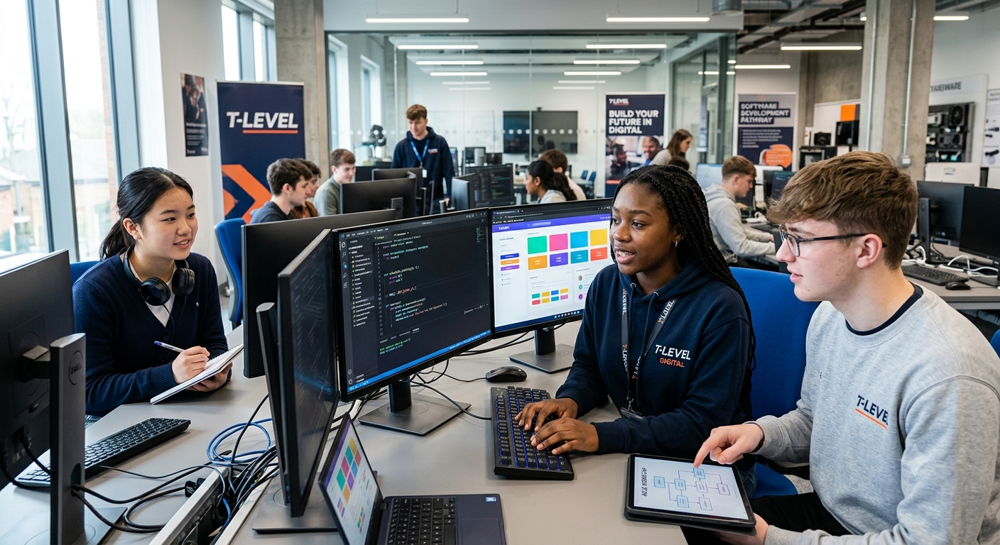

The Digital T-Level program provides a comprehensive introduction to the world of digital technology, covering key concepts such as software development, data analysis, and digital marketing.
The Digital T-Level program provides a comprehensive introduction to the world of digital technology, covering key concepts such as software development, data analysis, and digital marketing.
In the Digital T-Level program, students can expect a hands-on learning experience that combines theoretical knowledge with practical skills. The curriculum is designed to be engaging and relevant, preparing students for the demands of the digital workforce.
During you'r T-Level, you will:
To enroll in the Digital T-Level program, students should meet the following criteria:
Duration - 42 months
Level - Level 6
Qualification - BSc (Hons) Digital & technology Solutions - Software Pathway
Environment - Corporate office
Working Hours - 40 hours per week
Learning Format - Mix of on-the-job training, online study, and mentoring
Start Date - September 2026
We are seeking motivated individuals who are passionate about technology and eager to learn. Ideal candidates will have a strong academic background, excellent communication skills, and a desire to succeed in the digital world.
You'll enjoy this T-Level if you are:
As the digital landscape continues to evolve, so too will the skills and knowledge required to succeed. This T-Level will equip you with a strong foundation in digital technologies, preparing you for a range of future career opportunities in this dynamic field.